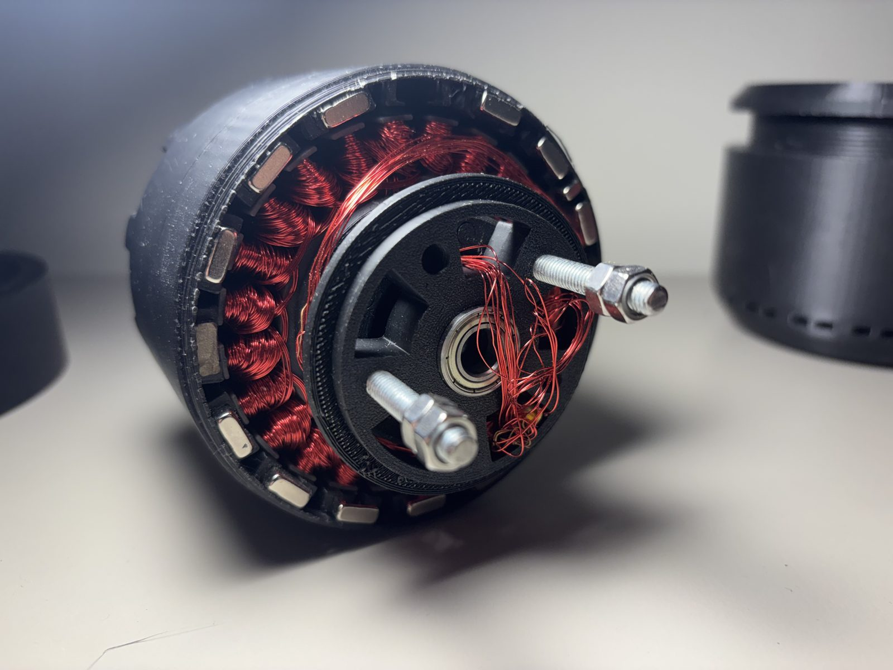
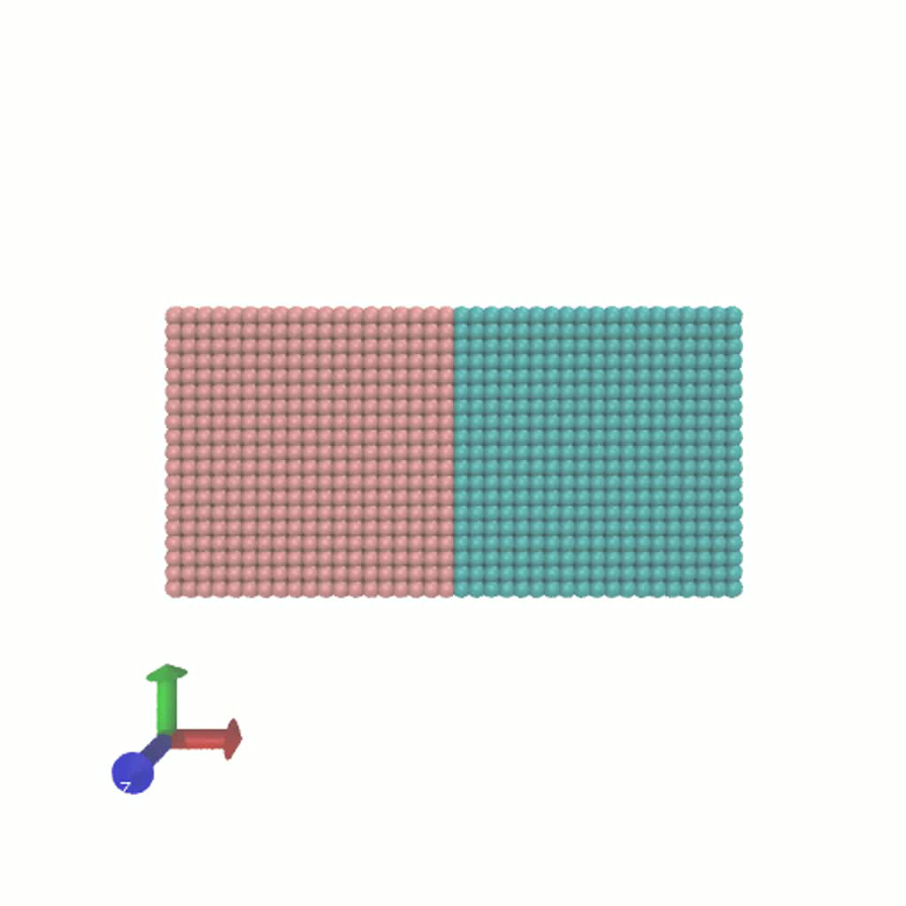
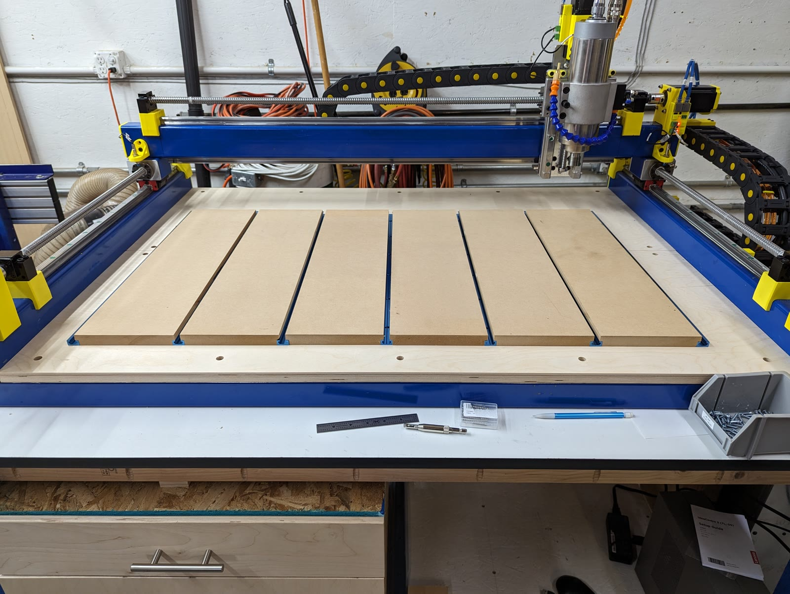
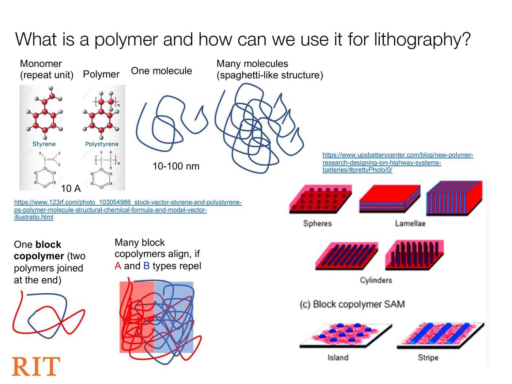
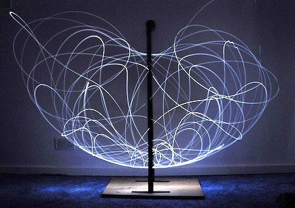
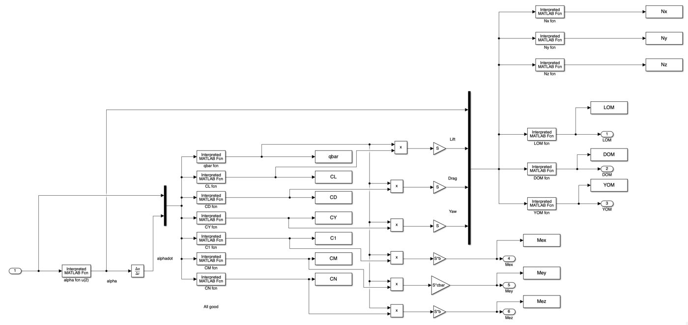

KAMBAR
®
00
KAMBAR
®
Work
,
About
— —
Contact
Built things at every scale I’ve had the chance to build at — production vehicle systems by day, a side practice in
simulation, 3D printing & CNC
by night. Each entry below is a project that had to work in the world.
Contact:
kambarmangibayev@gmail.com
Performance Stability System
Smart Environment Sensor Plus
Hydraulic Weight Sensing
Steer Differentiation System
Interface Logic & Access Control
Structural Frame Redesign
3D Slicer & G-code Generator
Investment Casting
PrintNC Build
3D Printing & Fabrication
Polymer Lithography Simulation
Flight Dynamics Simulation
Double Pendulum Experiment
Vacuum Cannon Experiment
Saturn V Stage Coupling






Vertical
,
Horizontal,
Grid
All rights reserved. ©2026 Kambar Mangibayev
01
Performance Stability
Controls · 2024
02
Sensor Plus
ML Vision · 2022
03
Weight Sensing
Hydraulics · 2023
04
Steer Differentiation
Geometry · 2024
05
Interface Logic
UX · 2023
06
Structural Frame
FEA · 2022
07
Slicer
Python · 2025
08
Investment Casting
AM · RIT
09
PrintNC
CNC · Build
10
3D Printing
AM · Ongoing
11
Polymer Litho
MD · RIT
12
Flight Dynamics
Simulink · RIT
13
Double Pendulum
Dynamics · RIT
14
Vacuum Cannon
Fluids · RIT
15
Saturn V FEA
FEA · RIT
01
Performance Stability
02
Sensor Plus
03
Weight Sensing
04
Steer Differentiation
05
Interface Logic
06
Structural Frame
07
Slicer
08
Investment Casting
09
PrintNC
10
3D Printing
11
Polymer Litho
12
Flight Dynamics
13
Double Pendulum
14
Vacuum Cannon
15
Saturn V FEA